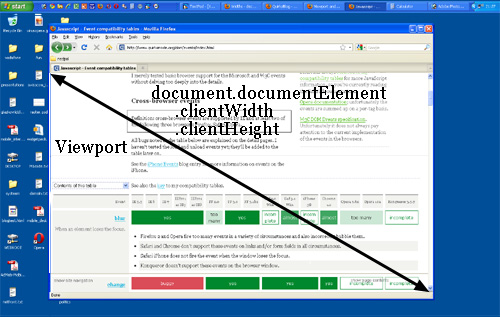

TP3
Responsive Web Design
Responsive Web Design
C'est le nombre physique de pixels qui composent l’écran. On le dénomme par le qualificatif : définition. Voici par exemple un écran de 2560x1440pixels. C’est sa surface.
Quelques exemples de surfaces réelles de terminaux divers:
iPhone 4(4, 4S) : 640x960
Galaxy SIII : 720x1280
Nokia Lumia 520 : 480x800
Apple iPad 3/4 : 1536x2048
On remarque très logiquement que plus la surface réelle est grande, plus l’écran sera grand.
La vérité c’est qu’il y a deux définitions au mot pixel: il peuvent être la plus petite unité qu’un écran comporte (le pixel qu’on parle dans la surface réelle) ; ou soit être basé sur une unité optique cohérente appellé “pixel de référence”. (le pixel CSS). Ainsi, le pixel CSS, plus communément appelé “device independant pixels” (DIPs) est le nombre de pixels virtuels que le terminal pense avoir et sur lequel il fonde son affichage. Pour des raisons de rétrocompatibilité, les constructeurs se basent sur cette unité de pixel qui demeure identique quelle que soit la résolution. La valeur du device-width d’un périphérique est donc non pas exprimée en pixels mais en DIPs.
Le “pixel ratio” correspond ainsi au rapport entre les pixel réels (hardware) et les pixels CSS (software). Par exemple, l’iPhone 4 est décrit par un pixel ratio de 2 car sa définition en pixel physique est le double de sa définition en pixel CSS. Surface réelle : 960 x 640 Pixels CSS: 480 x 320 Il y a donc 2 pixels de surface réelle pour un pixel CSS. Avec ces deux définitions, nous pouvons remarquer le rapport suivant: width/pixel ratio = device width.
On parle souvent à tort de “screen size” (taille de l’écran) mais nous devrions parler de viewport.  On pourrait dire que le viewport, c’est tout ce qui commence avec la balise < html > et ce qui finit avec < /html>. Le viewport c’est la surface du navigateur.
A ne pas confondre avec définition, la résolution, c’est le nombre de pixel contenu dans un pouce (2,54cm). Cela n’a donc rien à voir avec la définition d’un écran, on peux d’ailleurs avoir deux écrans de même définition mais avec une résolution différente : l’iPhone 3GS et l’iPhone 4.
Plus la résolution est grande, plus les pixels seront petits (on arrive à en caser plus sur moins de place). Conclusion: en rendu final, les pixels seront moins visibles, cela représente donc un argument marketing fort car la différence entre qualité print et écran se réduit chaque année un peu plus.
Grâce à toutes ces informations, nous pouvons maintenant comprendre la fameuse déclaration HTML5 qui rend tout site “responsivable” :

62% de la taille du web n’est constitué que d’images, et nous en envoyons chaque jour toujours plus. Et pourtant, de toutes ces images, on en fait bien peu cas. En effet, même si on entend partout et tout le temps que le web est au “responsive”, que l’industrie entière a pris ce mouvement a bras le corps, les images ont littéralement été mise de côté de ce grand chamboulement. Leur seul possibilité, dans le code, est d’être coincé entre une balise < img > et son attribut src.
Etre une image ou ne pas être. C’est tout.
Bien évidemment, les développeurs avaient le choix. Soit ils rendaient leurs site moins décoré pour certains, ou soit plus lent pour tous. Ils ont choisi la dernière option, délivrant des images en résolution toujours plus grande. Ainsi, on peux parler de gâchis.
En effet, a quoi ressemble l’univers des image aujourd’hui? A pas grand chose.
Lorsque l’on insère une image dans nos pages web, il y a de fortes chances pour que nous utilisions un code semblable à :
<img src="mon-image.jpg" width="850" height="475" alt="">
Tout ce qu’on dit ici c’est de réserver une boite de taille fixe et d’y mettre une image. En 2014, avec l’explosion des surfaces d’écran diverses et variées, l’arrivée des smartwatch, la pénétration du smartphone en milieux en développement, c’est tout ce que nous avons en HTML5/CSS.
Alors oui, tel Bootstrap, on peut rajouter un peu de “responsiveness”:
img {
max-width: 100%;
height: auto;
}
Mais c’est de la triche. On conviendra que charger une image de 850 x 475 px n'est pas très adapté sur un écran de 320 px de large (si on prend comme exemple la largeur actuelle gérée par l'iPhone). Une image de cette taille pèse environ 150 Ko (compression de 40% sur une photographie), là où une image adaptée de 320 x 179 px ferait environ 23 Ko avec la même compression. Soit une différence de 127 Ko, multiplié par le nombre d'images du même genre dans votre page.
Mais heureusement, car il faut bien une fin heureuse, quelques éléments commencent à émerger et vont sauver les images:
srcset / sizes
picture / source
La première technique pour créer des images responsive est l’élément “srcset”, accolés à son ami “sizes”. Nous allons voir en quoi ces deux éléments sont magiques.
Le gros du problème avec les images, c’est le partage d’information. En effet, certaines variables sont connus seulement par l’intégrateur, quand d’autres sont connus seulement par le navigateur.
Par exemple, les dimensions du viewport de l’utilisateur final? C’est le navigateur qui les connait. L’espace que va prendre l’image au sein du viewport? C’est l’intégrateur. La densité de pixel de l’écran? Le navigateur. Les dimensions de l’image? L’intégrateur.
On remarque ainsi un balancement d’informations entre navigateur/intégrateur. Personne ne dispose de toutes les informations. Or, pour pouvoir mettre en place un élément aussi puissant que les images responsives, il faut que le navigateur sache tout de l’image....et c’est justement ce à quoi sert SRCSET et SIZES! Srcset va le renseigner sur les dimensions de l’image, et sizes sur la place que sera concédé à l’image au sein de notre page.
Regardons un exemple de code et analysons-le.
<img src="small.jpg"
srcset="large.jpg 1024w,
medium.jpg 640w,
small.jpg 320w"
sizes="(min-width: 36em) 33.3vw,
100vw"
alt="A rad wolf" />
La première ligne est assez banale et reconnaissable, elle renseigne sur la location de l’image. A la deuxième ligne, entre en scène SRCSET. Chaque ligne correspond à une surface d’image différente (large, moyen, petit). A la fin de chaque ligne se trouve ce que l’on appelle le descripteur. Ici “w” (1024w, 640w, 320w). Il renseigne sur la largeur de l’image. Grâce à cela, le navigateur sait maintenant, au chargement de la page, la taille de l’image finale et va pouvoir servir à l’utilisateur seulement celle dont son périphérique pourra jouir.
Mais ce n’est pas fini, la spécification prévoit également un élément “sizes” qui va renseigner le navigateur sur la taille que prendra l’image au sein du viewport. Sizes est rédigé comme une media-query. Ici, on dit que : Pour tous les viewport qui font au minimum 36em de large, l’image prendra 33,3% de la largeur du viewport. Pour les écran plus petit à 36em, on l’affichera sur toute la largeur du viewport (100vw).
C’est tout! Avec ces deux éléments, le navigateur devient super intelligent et délivre ainsi des images intelligentes.
Petite démo avec le code précédent: